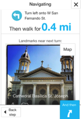

I love maps but am fairly terrible at using them for their most basic purpose - getting around. I am that person walking with their head down watching the blue dot move with them or alternatively going a block up, checking the street sign, and ever so awkwardly turning around.
So Landmark Directions, a recent locally launched app from the mind of Stephanie Nguyen, quickly became one of my iPhone go-tos. Landmark (screenshot to the left) lets you navigate the world visually. Enter your destination and Landmark gives you turn by turn directions using photos of landmarks along the way.
Recently I used Landmark to get around San Francisco and not only did it make navigating the city easier, it also changed the experience of getting around. Instead of being glued to that blue dot on my phone, my head was up and my eyes were taking in all the sights around me searching for that coffee shop, iconic building, or thrift store to take the left at.
Interested in getting around via Landmark? Download it for your iPhone or Android.
DC Hack is a semi-regular segment presenting hacks for better living in the District. Have a hack? E-mail it to DataLensDC@gmail.com!